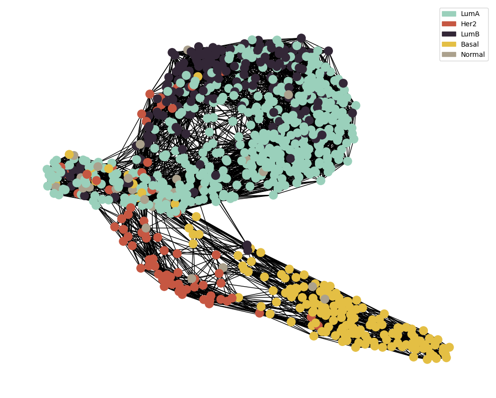

Preprocessing in Python
## Import Packages
import pandas as pd
import numpy as np
import pickle
import sys
sys.path.insert(0 , './../MAIN/')
from utils import *
import preprocess_functions
import networkx as nx
C:\Users\Barry\.conda\envs\DGL\lib\site-packages\requests\__init__.py:109: RequestsDependencyWarning: urllib3 (2.3.0) or chardet (None)/charset_normalizer (2.1.1) doesn't match a supported version!
warnings.warn(
## Specify Variables
modality = 'RPPA'
target = 'paper_BRCA_Subtype_PAM50'
pipeline = 'LogReg'
#pipeline = 'DESeq'
## Load Data
with open(f'./../../../../data/raw/{modality}_preprocessed.pkl' , 'rb') as file :
loaded_data = pickle.load(file)
count_mtx = loaded_data['datExpr']
datMeta = loaded_data['datMeta'].reset_index()[['patient' , target]].set_index('patient')
## Perform Feature Selection Pipeline
data_to_save = {}
device = torch.device('cuda' if torch.cuda.is_available() else 'cpu')
#device = 'cpu'
### Check if the index of the count matrix and the metadata match
if len(set(count_mtx.index) & set(datMeta.index)) == 0 :
count_mtx = count_mtx.T
### Perform Feature Selection for the specified pipeline
if pipeline == 'DESeq' :
print('Performing Differential Gene Expression for Feature Selection')
datMeta.index.name = 'index'
### Preprocess the data
count_mtx , datMeta = preprocess_functions.data_preprocess(count_mtx.astype(int).astype(np.float32), datMeta[target] , gene_exp = False)
### Perform DESeq
dds, vsd, top_genes = preprocess_functions.DESEQ(count_mtx , datMeta , target , n_genes=500)
### Save the data
data_to_save[f'extracted_feats'] = list(set(top_genes))
datExpr = pd.DataFrame(data=vsd , index=count_mtx.index , columns=count_mtx.columns)
elif pipeline == 'LogReg' :
print('Performing Logistic Regression for Feature Selection')
### Preprocess the data
n_genes = count_mtx.shape[1]
datExpr = count_mtx.loc[: , (count_mtx != 0).any(axis=0)] # remove any genes with all 0 expression
### Perform Elastic Net
extracted_feats , model = preprocess_functions.elastic_net(datExpr , datMeta[target] , l1_ratio = 1 , lam=0.01 , num_epochs=1000)
### Save the data
data_to_save['extracted_feats'] = list(set(extracted_feats))
data_to_save['model'] = {'model' : model}
datMeta.index.name = 'index'
datMeta = datMeta[target]
data_to_save['datExpr'] = datExpr
data_to_save['datMeta'] = datMeta
### Save the data
with open(f'./../../../../data/raw/{modality}_processed.pkl' , 'wb') as file :
pickle.dump(data_to_save , file)
Performing Logistic Regression for Feature Selection
Loss : 0.6047: 100%|██████████| 1000/1000 [00:04<00:00, 229.54epoch/s]
Model score : 0.877
knn = 15
method = 'pearson'
if len(data_to_save['extracted_feats']) > 0 :
G = preprocess_functions.knn_graph_generation(datExpr , datMeta , method=method ,
extracted_feats=data_to_save['extracted_feats'], node_size =150 , knn = knn )
else :
G = preprocess_functions.knn_graph_generation(datExpr , datMeta , target , method=method ,
extracted_feats=None, node_size =150 , knn = 15 )
nx.write_graphml(G, f'./../../../../data/Networks/{modality}_graph.graphml')
